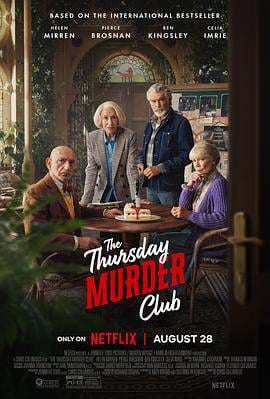

6.7
周四推理俱乐部
The Thursday Murder Club
2025
美国
评分 6.7
导演:
克里斯·哥伦布
演员:
海伦·米伦 / 皮尔斯·布鲁斯南 / 本·金斯利 / 西莉亚·伊姆里 / 娜奥米·阿基 / 丹尼尔·梅斯 / 亨利·劳埃德-休斯
类型:
喜剧,恐怖,悬疑,犯罪
剧情简介
在英格兰乡间的一处高级养老社区，四位性格各异的退休老人每周四都会聚在一起，泡上一壶茶，翻阅尘封的档案。他们自称“周四推理俱乐部”，以破案为乐，用智慧与直觉重构那些早已结案的悬案。表面上，这只是他们抵抗孤独的消遣，直到某个周四晚上，社区管理员被发现死于自己办公室中——现实中的谋杀突然闯入他们的游戏。伊丽莎白（海伦·米伦 饰）是前军情六处特工，思维冷静、直觉敏锐；罗恩（皮尔斯·布鲁斯南 饰）是前工会领袖，脾气火爆却心地善良；易卜拉欣（本·金斯利 饰）是退休精神科医生，擅长洞察心理；乔伊丝（西莉亚·伊姆里 饰）则以温柔外表掩饰着敏锐的好奇心。四人各展所长，用老派的方式对抗现代社会的犯罪迷局。导演克里斯·哥伦布以他标志性的温情与节奏感，将犯罪故事拍出了轻盈的幽默感。影片在推理的紧张与生活的温度之间取得巧妙平衡——调查现场可能是一间被花香掩盖的温室，嫌疑人名单上可能是邻居的女儿或园丁的孙子。镜头下的光影温暖又诡秘，像是一本翻旧的英伦侦探小说。随着线索层层揭开，他们发现这起谋杀案并非孤立事件，而是牵连到整个社区的秘密。过去的丑闻、被掩盖的死亡、隐藏的金钱交易在看似平静的田园生活下翻涌。影片节奏稳健，充满智慧的对白与冷幽默让人忍俊不禁，同时又不失悬疑的张力——当真相揭晓，观众会发现每个老人都有属于自己的“过去”。《周四推理俱乐部》是一封写给时间与人生的情书——它提醒人们，衰老并不意味着退场，而是以另一种方式继续参与世界的游戏。正如片中伊丽莎白说的那句台词：“破案并不是为了伸张正义，而是为了证明——我们还活着，还能思考。”